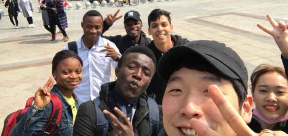

08 de Março de 2017
Primeiro dia de aula

Após alguns perrengues que passei assim que pousei na China eu fui à primeira
aula na nova faculdade e comecei os estudos da língua chinesa.
Conheci também
meus novos colegas de classe, alunos do Congo e alunos da Coréia, muito simpáticos
diga-se de passagem.